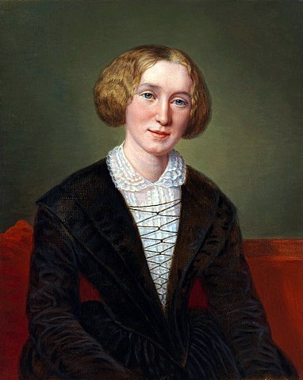

The Chilling Shrill Of Regret
If only I had taken complete charge of my life, I would have been in a totally different place today.
Atleast I don’t want to say this a few months or years from now. Self accountability is vital.
The Light At The End Of The Tunnel
I can turn all this around. I just need to sort some stuff out. Let us strap-in and do this baby!
I Know What I Want
After a lot of trials and errors, I now have a very clear picture of the things I want to do in life. I felt lost once I no longer am now.
Get Disciplined About The Right Things In Life
That is the essential key to freedom. Figure out what the right things are stick with it.
Tenacity & Perseverance
Keep Getting Up If You Fall Down
Love & Forgive Yourself
It is Ok dear!